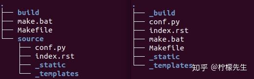
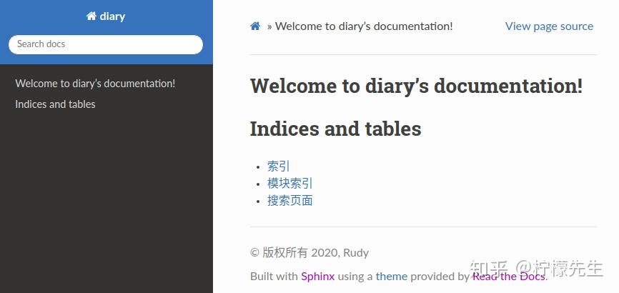
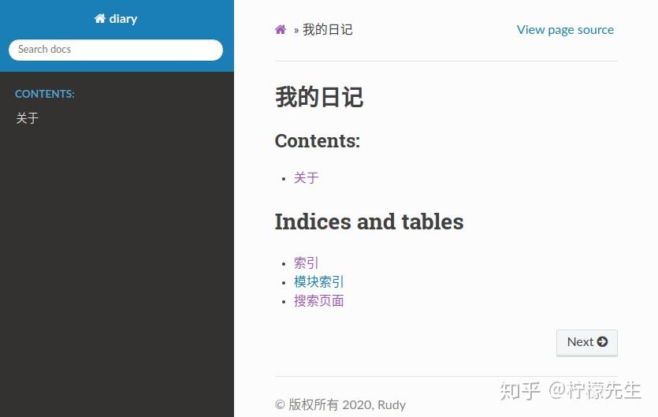
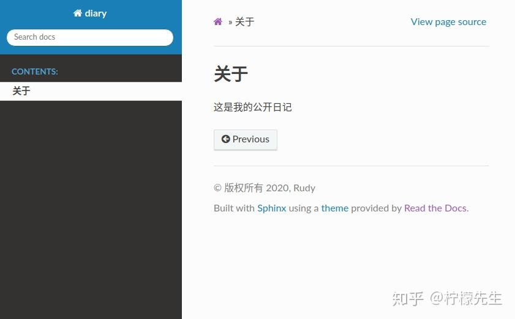
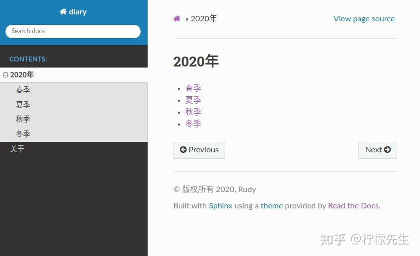
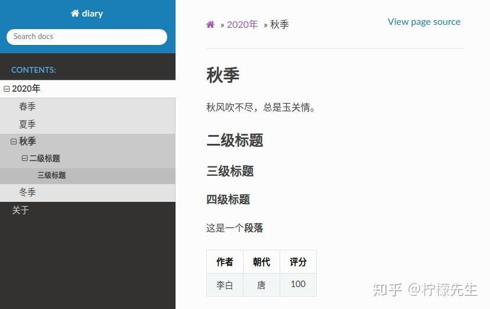

Windows版微信WechatAppEx等进程占用内存多，干掉对应的exe
对应的exe通常是在C:\Users\George\AppData\Roaming\Tencent\WeChat\XPlugin\Plugins\RadiumWMPF\9105\extracted\runtime目录下。
删除该文件夹，然后重新新建一个同名文件夹/文件。右键修改该文件属性：安全性-》选项-》停用继承。然后修改所有者为：NT SERVICE\TrustedInstaller。
对应的，删除C:\Users\George\AppData\Roaming\Tencent\WeChat\XPlugin\Plugins目录下的其他组件文件夹，修改为空白文件，并修改权限为TrustedInstaller使其无法被读取、修改。
Adobe提示非正版软件弹窗
用FAB（Firewall App Blocker）直接添加防火墙，把这玩意禁止联网。也可以手动添加防火墙。
C:\Program Files (x86)\Common Files\Adobe\#C:\Program Files (x86)\Common Files\Adobe\AdobeGCClient\最好把Adobe软件其他文件夹也给禁止联网：
xxxxxxxxxxC:\Program Files (x86)\Adobe\C:\Program Files\Adobe\
Localsend提示报错
(10013): 以一种访问权限不允许的方式做了一个访问套接字的尝试
net stop winnatnetsh interface ipv4 show excludedportrange protocol=tcpnet start winnatnetsh interface ipv4 show excludedportrange protocol=tcp
mkdocs
xpip install mkdocs#conda install mkdocs
mkdocs servemkdocs build
Sphinx
https://zhuanlan.zhihu.com/p/264647009
安装最新版本的 Sphinx 及依赖。
xxxxxxxxxx pip3 install -U Sphinx为了完成本示例，还需要安装以下软件包。
xxxxxxxxxx pip3 install sphinx-autobuild pip3 install sphinx_rtd_theme pip3 install recommonmark pip3 install sphinx_markdown_tables安装完成后，系统会增加一些 sphinx- 开头的命令。
xxxxxxxxxx sphinx-apidoc sphinx-autobuild sphinx-autogen sphinx-build sphinx-quickstart3. 快速开始
3.1 创建项目
我们以建立 diary 日记文档系统为例，先创建并进入 diary 文件夹（后续所有操作都在该文件夹内）。执行 sphinx-quickstart 构建项目框架，将会出现如下对话窗口。
xxxxxxxxxx 欢迎使用 Sphinx 3.2.1 快速配置工具。 Please enter values for the following settings (just press Enter to accept a default value, if one is given in brackets). Selected root path: . You have two options for placing the build directory for Sphinx output. Either, you use a directory "_build" within the root path, or you separate "source" and "build" directories within the root path. > 独立的源文件和构建目录（y/n） [n]: 首先，询问你是否要创建独立的源文件和构建目录。实际上对应两种目录结构，一种是在根路径下创建“_build”目录，另一种是在根路径下创建“source”和“build”两个独立的目录，前者用于存放文档资源，后者用于保存构建生成的各种文件。根据个人喜好选择即可，比如我更倾向于独立目录，因此输入 y。
接着，需要输入项目名称、作者等信息。
xxxxxxxxxx The project name will occur in several places in the built documentation. > 项目名称: diary > 作者名称: Rudy > 项目发行版本 []: v1然后，可以设置项目的语言，我们这里选择简体中文。
xxxxxxxxxx If the documents are to be written in a language other than English, you can select a language here by its language code. Sphinx will then translate text that it generates into that language. For a list of supported codes, see https://www.sphinx-doc.org/en/master/usage/configuration.html#confval-language. > 项目语种 [en]: zh_CNOK，项目创建完成！（两种目录结构分别如下）

Makefile：可以看作是一个包含指令的文件，在使用 make 命令时，可以使用这些指令来构建文档输出。build：生成的文件的输出目录。make.bat：Windows 用命令行。_static：静态文件目录，比如图片等。_templates：模板目录。conf.py：存放 Sphinx 的配置，包括在sphinx-quickstart时选中的那些值，可以自行定义其他的值。index.rst：文档项目起始文件。
此时我们在 diary 目录中执行 make html，就会在 build/html 目录生成 html 相关文件。

在浏览器中打开 index.html，将会看到如下页面。

当然，直接访问 html 文件不是很方便，所以我们借助 sphinx-autobuild 工具启动 HTTP 服务。
xxxxxxxxxx sphinx-autobuild source build/html默认启动 8000 端口，在浏览器输入 http://127.0.0.1:8000 。但是看到的页面跟上图一样，那换个主题吧！
3.2 修改主题
打开 conf.py 文件，找到 html_theme 字段，修改为“classic”主题。
xxxxxxxxxx #html_theme = 'alabaster' html_theme = 'classic'保存！可以看到网页变成这样了

Sphinx 为我们提供了好多可选的主题，在 Sphinx Themes 都可以找到。大家最熟悉的应该是 sphinx_rtd_theme 主题，其实我们前面已经安装好了。
xxxxxxxxxx html_theme = 'sphinx_rtd_theme'那就用这个主题吧！

4. 最佳实践
4.1 index.rst 语法
受篇幅限制，本文无法详细介绍 reST 语法，具体可查看官方文档 RESTRUCTUREDTEXT 简介，这里主要分析 index.rst 的内容。
xxxxxxxxxx .. diary documentation master file, created by sphinx-quickstart on Sat Oct 10 22:31:33 2020. You can adapt this file completely to your liking, but it should at least contain the root `toctree` directive. Welcome to diary's documentation! ================================= .. toctree:: :maxdepth: 2 :caption: Contents: Indices and tables ================== * :ref:`genindex` * :ref:`modindex` * :ref:`search`第1-4行由
..+ 空格开头，属于多行评论（类似于注释），不会显示到网页上。第6-7行是标题，reST 的标题需要被双下划线（或单下划线）包裹，并且符号的长度不能小于文本的长度。
第9-11行是文档目录树结构的描述，
.. toctree::声明了一个树状结构（toc 即 Table of Content），:maxdepth: 2表示目录的级数（页面最多显示两级），:caption: Contents:用于指定标题文本（可以暂时去掉）。第15-20行是索引标题以及该标题下的三个索引和搜索链接。
4.2 《我的日记》
我们进入 source 目录，修改 index.rst 文件，将标题改为“我的日记”，并添加一个 about 页面。
xxxxxxxxxx我的日记=================================
.. toctree:: :maxdepth: 2 :caption: Contents:
about因此我们需要在 source 目录下新建一个 about.rst 文件，并写下内容：
xxxxxxxxxx 关于 ======== 这是我的公开日记打开浏览器，输入 http://127.0.0.1:8000，将会看到如下页面。


接下来，我们为日记添加一级子目录。先在 source/index.rst 中添加路径信息。
xxxxxxxxxx 我的日记 ================================= .. toctree:: :maxdepth: 2 :caption: Contents: 2020/index about在 source 目录下新建一个名为“2020”的文件夹，在“2020”文件夹中再创建“春、夏、秋、冬”四个文件夹，并且在其中分别创建 contents.rst 文件。最后，别忘了还有要新建一个 index.rst 文件。这一步完成后，2020 目录结构如下：
xxxxxxxxxx 2020 ├── index.rst ├── 春 │ └── contents.rst ├── 冬 │ └── contents.rst ├── 秋 │ └── contents.rst └── 夏 └── contents.rst在 2020/index.rst 文件中添加如下内容。
xxxxxxxxxx 2020年 ================================= .. toctree:: :maxdepth: 2 春/contents 夏/contents 秋/contents 冬/contents以及四个 contents.rst 文件的内容：
春/contents.rst
xxxxxxxxxx 春季 ======== 春眠不觉晓，处处闻啼鸟。夏/contents.rst
xxxxxxxxxx 夏季 ======== 夏早日初长，南风草木香。秋/contents.rst
xxxxxxxxxx 秋季 ======== 秋风吹不尽，总是玉关情。冬/contents.rst
xxxxxxxxxx 冬季 ======== 冬尽今宵促，年开明日长。好啦！打开浏览器看一下吧～


好啦，日记就先写到这吧！喜欢的小伙伴可以在 luhuadong/diary 点赞+下载。
4.3 支持 Markdown
前面我们都是用 reST 语法来操作，但如果我们想用 Markdown 写，或者有大量 Markdown 文档需要迁移怎么办呢？
虽然 Sphinx 默认不支持 Markdown 语法，但可以通过 recommonmark 插件来支持。另外，如果需要支持 markdown 的表格语法，还需要安装 sphinx-markdown-tables 插件。这两个插件其实我们前面已经安装好了，现在只需要在 conf.py 配置文件中添加扩展支持即可。
xxxxxxxxxx extensions = [ 'recommonmark', 'sphinx_markdown_tables' ]我们以“秋”为例，将 rst 文件修改为 md 文件。
xxxxxxxxxx cd 秋 mv contents.rst contents.md修改 contents.md 文件，增加一些 Markdown 语法内容：
xxxxxxxxxx # 秋季 秋风吹不尽，总是玉关情。 ## 二级标题 ### 三级标题 #### 四级标题 这是一个**段落** | 作者 | 朝代 | 评分 | | :--: | :--: | :--: | | 李白 | 唐 | 100 | 噔噔！打开浏览器，完美～